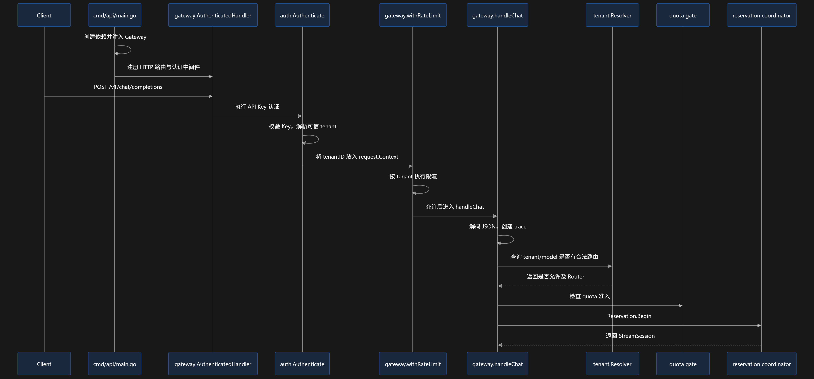
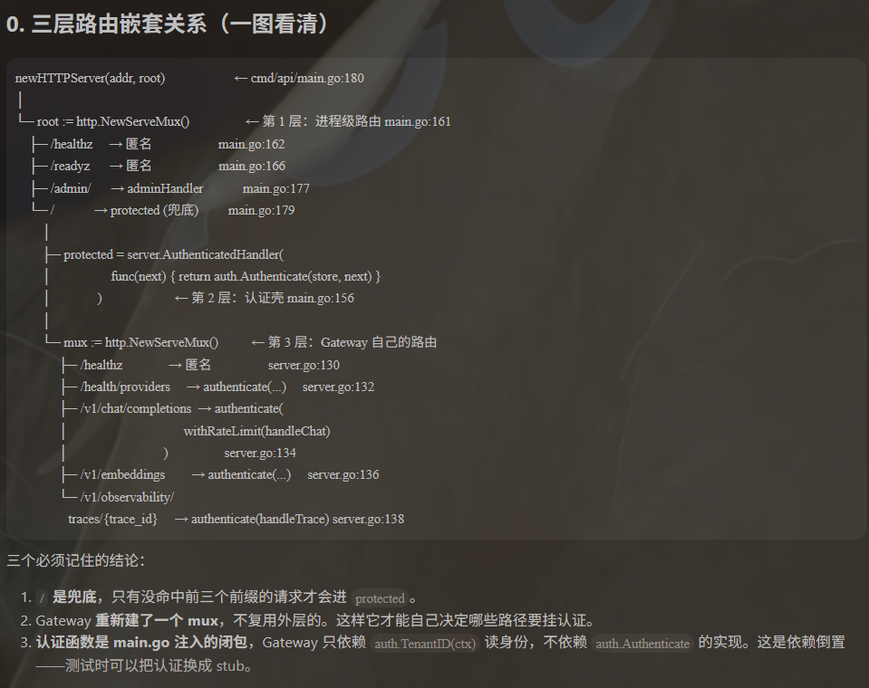
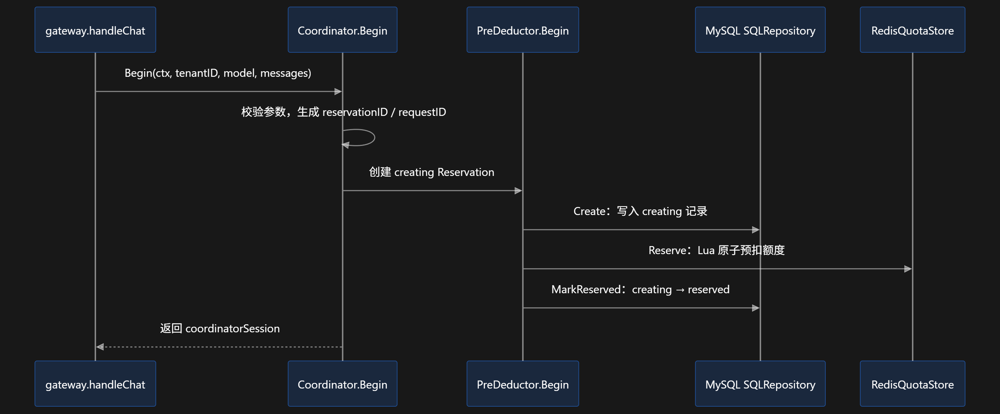

AgentMesh：租户路由与配额预扣边界
AgentMesh 项目展示 · 系列目录 · 7 / 12
详细追踪 Gateway 的请求前半链，厘清认证、限流、模型路由、quota.Allow 与 reservations.Begin 的实际职责。
实现说明与运行记录基于 2026-09-25 更新的原稿。正文中的文件行号、实现状态与验证结果按该历史快照理解。
实现概览
- 请求身份与模型范围在服务端确定。
- quota.Allow 的检查与 Redis 实际预扣需要区分。
- SSE 协议与 trace 查询提供响应和诊断边界。
实现细节
补充概念
Gateway 是 AgentMesh 的 Http 对外边界层 :
Gateway 是 AgentMesh 唯一的公网门面，它不是代理，而是"门卫 + 记账 + 路由 + 流式转发"的组合体
暴露 OpenAI 兼容的 v1/chat/completions (SSE 流式) 以及 embeddings , 健康检查, trace 查询端点
实际上它是无状态薄壳 : Server 组合 router , 租户解析器 , 限流/配额门禁, 请求链路为 鉴权 -> 限流 -> 租户路由 -> 配额预扣 -> Provider流式 -> 结算
作用：统一收口所有 LLM 流量，在访问上游 Provider 前完成鉴权、限流、配额、观测埋点（X-AgentMesh-Trace-ID），并支持多 Provider fallback（首块前可切换、首块后只能报 stream_interrupted）
当前的请求链路
mux : 请求的路由分发器 ;


请求链路开始
API 启动时
cmd/api/main.go:155 注册了外层路由：
protected := server.AuthenticatedHandler(func(next http.Handler) http.Handler {
return auth.Authenticate(store, next)
})
root := http.NewServeMux()
root.HandleFunc("/healthz", ...)
root.HandleFunc("/readyz", ...)
root.Handle("/admin/", adminHandler)
root.Handle("/", protected)
因此，聊天请求的第一跳是：
POST /v1/chat/completions
→ 没匹配 /healthz、/readyz、/admin/
→ 命中 root 的 "/" 路由
→ 交给 protected
这里的/是兜底入口。protected是 Gateway 建出来、带认证规则的 Handler。
Gateway 把认证包在限流外面
在 internal/gateway/server.go:127，AuthenticatedHandler 注册聊天路由：
mux.Handle(
chatPath,
authenticate(
s.withRateLimit(http.HandlerFunc(s.handleChat)),
),
)
读成“请求执行顺序”就是：
auth.Authenticate
→ s.withRateLimit
→ s.handleChat
代码构造时是从里往外包；HTTP 请求到来时则从外往里执行。
authenticate → withRateLimit → handleChat
原因：authenticate(X) 返回的新 handler 内部会去调 X。所以最外层包的那个先执行，最内层最后执行。
认证：验证 API Key，把 tenant 放进请求 Context
实际传入的 authenticate 函数定义在 [main.go (line 156)]
(C:/Users/17hwliao/Desktop/Go-Agent-Projects/01-AgentMesh/cmd/api/main.go:156)
它调用 [auth.Authenticate (line 51)]
(C:/Users/17hwliao/Desktop/Go-Agent-Projects/01-AgentMesh/internal/auth/auth.go:51)
认证中间件做的事情是：
读 Authorization
→ 检查 Bearer 格式
→ 按 key 前缀和完整 key 的 SHA-256 摘要查询存储
→ 认证失败：401 并结束
→ 认证成功：把 tenant ID 写入 request.Context() // context.WithValue(r.Context(), contextKey{}, t.ID)租户写入 ctx
→ 调用下一个 Handler
写入 Context 的代码是：
next.ServeHTTP(
w,
r.WithContext(context.WithValue(r.Context(), contextKey{}, t.ID)),
)
所以后续的 tenant 身份来自通过认证的 API Key，不是来自请求 JSON 中客户端自报的字段。
限流：读取认证后的 tenant，再决定是否进入聊天处理
接下来执行 [withRateLimit (line 143)]
(C:/Users/17hwliao/Desktop/Go-Agent-Projects/01-AgentMesh/internal/gateway/server.go:143)
它从刚才的请求 Context 中取 tenant：
tenantID, ok := auth.TenantID(request.Context())
再调用已注入的限流器：
decision := s.rateLimit.Admit(request.Context(), tenantID)
放行就调用 next，也就是 handleChat；拒绝则返回 429 和 Retry-After，请求到此结束。
在当前 compose.yml 中，限流器配置为 Redis 存储，见 compose.yml:103。不过从 Handler 的角度，它只调用 Gate.Admit，不直接操作 Redis。
handleChat：先校验请求，再查 tenant/model 路由
请求通过认证与限流后，进入 internal/gateway/server.go:219。
第一步检查 HTTP 方法(POST) 并 解码 请求：
if request.Method != http.MethodPost {
// 405
}
input, err := decodeChatRequest(request)
if err != nil {
// 400
}
decodeChatRequest 会限制 body 大小、拒绝未知字段和多余 JSON，并要求 model、messages 有效且 stream 为 true，见 internal/gateway/server.go:394。
请求格式有效后，代码从 Context 再次读取 tenant，并创建 trace：
tenantID, ok = auth.TenantID(request.Context())
session = s.recorder.Start(tenantID, input.Model)
随后调用 tenantResolver，按 tenant 和 model 取出 streamer：
streamer, allowed =
s.tenantResolver.StreamerWithObserver(
request.Context(), tenantID, input.Model, session,
)
不支持带 observer 的实现时，才退回普通 Streamer 接口。tenant 无权使用该 model，就记录 trace 并返回 403。
关键纠正：quota.Allow() 当前不是实际的 Redis 扣额操作
quotaGate 当前仅仅只是一个接口 , 默认实现是 allowQuotaGate{} ; Allow 永远返回 true ;
后期 : 可以在这个地方天界一个真实的 额度查询插件
路由通过后，handleChat 还会调用：
if !s.quota.Allow(request.Context(), tenantID, input.Model) {
// 429
}
但 Server 构造函数默认把 quota 设置成 allowQuotaGate{}
这个实现的 Allow() 永远返回 true，见 [server.go (line 53)]
(C:/Users/17hwliao/Desktop/Go-Agent-Projects/01-AgentMesh/internal/gateway/server.go:53)。
同时，cmd/api/main.go:146 调用构造函数时传入的是：
gateway.NewWithTenantRoutingAndRecorderAndReservations(
resolver,
recorder,
reservationGate, //第三个参数是 reservations, 不是quota ;
)
第三个参数是 reservations，不是可选的 quota 参数。因此，在当前这条生产式组装路径里，quota.Allow() 使用默认的“始终放行”实现。
也就是说，不要把这里讲成“Gateway 已经在 quota.Allow() 里完成 Redis 额度检查”。它只是一个默认放行的门禁接口。
真正的额度预扣发生在 reservations.Begin()
继续往下，handleChat 调用：
reservationSession, err =
s.reservations.Begin(
request.Context(),
tenantID,
input.Model,
input.Messages,
)
是否启用 Reservation，由启动配置决定。
在 Compose 配置中，AGENTMESH_QUOTA_MODE=reservation，
并提供 MySQL(DSN)、Redis 与单次预留额度，renant ID , 见 [compose.yml (line 98)]
(C:/Users/17hwliao/Desktop/Go-Agent-Projects/01-AgentMesh/compose.yml:98)。
OpenConfiguredCoordinator(会做一些启动级别期校验) :
会依据该配置建立 MySQL Repository、Redis Quota Store 和 Coordinator，见 [config.go (line 28)]
(C:/Users/17hwliao/Desktop/Go-Agent-Projects/01-AgentMesh/internal/reservation/config.go:28)。
当 Begin() 实际被调用时，代码顺序是：
Coordinator.Begin
→ 生成 reservationID 和 requestID
→ PreDeductor.Begin PreDeductor 预扣减器
→ MySQL Create：持久化 creating 状态
→ Redis Reserve：原子预扣预留额度
→ MySQL MarkReserved：状态改成 reserved
→ 返回 StreamSession
Coordinator.Begin
├─ 生成 reservationID + requestID
├─ MySQL Create 状态=creating ← 持久化"我打算要这个额度"
├─ Redis Lua 原子预扣 reservationUnits ← 真正的额度从 Redis 走
└─ MySQL MarkReserved 状态=reserved ← 记账落定
→ 返回 StreamSession（后续用来结算）
这段顺序由 [coordinator.go (line 79)]
(C:/Users/17hwliao/Desktop/Go-Agent-Projects/01-AgentMesh/internal/reservation/coordinator.go:79) 和 internal/reservation/pre_deduction.go:28 实现。
这时发生的是预留额度，还不是最终结算。返回的 StreamSession 会在后续 Provider 调用时记录 attempt 和进度，流结束后才由 Complete() 结算或取消。关键区分：quota.Allow vs reservations.Begin
| 项 | quota.Allow |
reservations.Begin |
|---|---|---|
| 当前默认 | 永远 true | 真正预扣 |
| 依赖存储 | 无 | Redis + MySQL |
| 幂等性 | 无 | StreamSession 支持重试 |
| 语义 | 门卫（占位） | 财务记账 |
| 失败码 | 429 quota_exhausted | 429 quota_exhausted / 503 quota_unavailable |
Step 7 — SSE 懒启动 + Provider 调用（294–324 行）
started := false
start := func() {
if started { return }
started = true
w.Header().Set("Content-Type", "text/event-stream")
w.Header().Set("Cache-Control", "no-cache")
w.Header().Set("Connection", "keep-alive")
}
emit := func(chunk provider.Chunk) error {
start() // 首个 chunk 时才真正写 header
return writeSSE(w, map[string]any{
"choices": []map[string]any{{"delta": map[string]string{"content": chunk.Delta}}},
"usage": chunk.Usage,
})
}
chat := provider.ChatRequest{Model: input.Model, Messages: input.Messages}
if reservationSession != nil {
hooked, ok := streamer.(router.HookedStreamer)
if !ok {
_ = reservationSession.Complete(ctx, quotaUnavailable, false)
writeJSONError(w, 503, quotaUnavailable)
return
}
err = hooked.StreamWithAttemptHook(ctx, chat, emit, reservationSession)
} else {
err = streamer.Stream(ctx, chat, emit)
}
"懒启动"是这里最妙的地方：
start()只有在emit第一次被调用时才执行- 所以在首个 chunk 之前，HTTP header 从未发出，Gateway 还有资格返回 JSON 错误
- 一旦
start()执行过（Content-Type: text/event-stream已发出去），HTTP 语义上不可回头——只能走 SSE 错误路径 - Router 内部也用这个"是否 emit 过"来判断能否切下一个 Provider：
带 reservation 时用 StreamWithAttemptHook：Router 会把每次 Provider attempt 记录到
StreamSession，作为结算证据——"我实际请求了哪个 provider、结果如何"
Step 8 — 三路收口（327–362 行）
// 结算 reservation
if reservationSession != nil {
if completeErr := reservationSession.Complete(ctx, streamErrorCode(err), isCancelled); completeErr != nil {
completeTrace(session, quotaUnavailable, false)
if started {
_ = writeSSE(w, map[string]any{"error": map[string]string{"code": quotaUnavailable}})
_ = writeDone(w)
return
}
writeJSONError(w, 503, quotaUnavailable)
return
}
}
if err == nil {
completeTrace(session, "success", false)
if !started { start() }
_ = writeDone(w)
return
}
if errors.Is(err, context.Canceled) || errors.Is(err, context.DeadlineExceeded) {
completeTrace(session, "cancelled", true)
return
}
if started {
completeTrace(session, streamErrorCode(err), false)
_ = writeSSE(w, map[string]any{"error": map[string]string{"code": streamErrorCode(err)}})
_ = writeDone(w)
return
}
completeTrace(session, streamErrorCode(err), false)
writeJSONError(w, 503, streamErrorCode(err))
四条出口线：
- 结算失败（MySQL/Redis 挂）：看是否已经出流——出过就走 SSE，没出过就 JSON 503
- 成功：trace=success +
[DONE]收尾 - 客户端取消 / 超时：只记 trace=cancelled，不算 Provider 错，也不写 DONE
- 其他错误：分 started 与否分别走 SSE 或 JSON
错误码映射 streamErrorCode(err)（421 行）：
reservation.Code == quota_exhausted→quota_exhaustederrors.Is(err, router.ErrStreamInterrupted)→stream_interrupted- 其他 →
provider_unavailable
3. SSE 协议细节（server.go:438–460）
// 每次事件
data: <json>\n\n
// 收尾
data: [DONE]\n\n
- 每次写完必须
Flusher.Flush()，否则客户端看不到实时数据（TCP 会攒包）。 - OpenAI 兼容格式：
choices[0].delta.content+usage。
4. handleTrace — 反查埋点（367 行）
tenantID, ok := auth.TenantID(ctx)
if !ok || s.recorder == nil { 404 trace_not_found; return }
trace, ok := s.recorder.Get(tenantID, request.PathValue("trace_id"))
if !ok { 404 trace_not_found; return }
关键安全设计：不区分"trace 不存在"、"trace 属于别的租户"、"trace 还没完成"，一律 404 trace_not_found。避免通过响应差异推断其他租户的 trace ID 是否存在。
handleChat 的完整调用链
root ServeMux
→ "/" 命中 protected
→ Gateway 匹配 /v1/chat/completions
→ auth.Authenticate
→ 校验 Bearer API Key
→ tenant ID 写入 request.Context()
→ withRateLimit
→ 按 tenant 调 Gate.Admit
→ 超限返回 429；否则继续
→ handleChat
→ 检查 POST、解码和校验 body
→ recorder.Start，设置 trace header
→ tenantResolver 按 tenant + model 取 streamer
→ model 不允许返回 403
→ quota.Allow 默认实现放行
→ 检查 streamer
→ reservations.Begin
→ MySQL 创建 creating
→ Redis 预扣
→ MySQL 改为 reserved
→ 返回 StreamSession
最该记住的修正是：
quota.Allow() 在当前 API 组装中是默认放行门禁；真实 Reservation 预扣从 reservations.Begin() 开始。Begin() 先在 MySQL 建立 creating 记录，再通过 Redis 原子预扣，最后把 MySQL 状态推进到 reserved。
追踪 Reservation.Begin 的预扣流程

全景调用链（先建立直觉）
Gateway.handleChat（server.go:219）
↓ Begin(ctx, tenantID, model, messages)
Coordinator.Begin（coordinator.go:79）
↓ ① 校验参数、生成 reservationID + requestID
↓ ② 组装 CreatePersistentReservation（带 ReservationUnits）
PreDeductor.Begin（pre_deduction.go:28）
↓
┌─────────────────────────────────────────────┐
│ ① SQLRepository.Create │ → MySQL: INSERT state='creating'
│ ② RedisQuotaStore.Reserve │ → Redis: Lua 原子预扣余额
│ ③ SQLRepository.MarkReserved │ → MySQL: UPDATE state='reserved'
└─────────────────────────────────────────────┘
↓
返回 coordinatorSession（内含 PersistentReservation）
第一步：Gateway 为什么调用 Begin
回到 internal/gateway/server.go:276-289：
var reservationSession reservation.StreamSession
if s.reservations != nil {
reservationSession, err = s.reservations.Begin(
request.Context(), // 参数 1：请求取消边界
tenantID, // 参数 2：认证得到的租户 ID
input.Model, // 参数 3：本次要用的模型
input.Messages, // 参数 4：聊天输入（用于估算 runes）
)
if err != nil {
if reservation.Code(err) == quotaExhausted {
writeJSONError(w, 429, quotaExhausted) // 余额不够
return
}
writeJSONError(w, 503, quotaUnavailable) // 依赖挂了
return
}
}
四个输入各自的语义：
| 参数 | 来源 | 用途 |
|---|---|---|
ctx |
request.Context() |
客户端断连会立即取消整个 Begin |
tenantID |
认证中间件写入的 ctx | 决定扣哪个租户的余额 |
model |
请求 body 里客户端自报 | 只是记录，实际路由靠 tenant+model 从 Resolver 拿 streamer |
messages |
请求 body | 后续 BeforeAttempt里用来算输入 runes，作为超扣保险 |
关键：Begin() 必须成功才进下一步。失败只有两种可能：
- 余额不够 → 429
quota_exhausted - Redis/MySQL 挂了 → 503
quota_unavailable
没有第三种失败——参数错、版本冲突、状态非法都不会返回给客户端，而是被包成上面两种之一。
第二步：Coordinator.Begin() 做参数校验 + 生成 ID
阅读 internal/reservation/coordinator.go:79-97：
func (c *Coordinator) Begin(ctx context.Context, tenantID, model string, messages []provider.Message) (StreamSession, error) {
if tenantID == "" || model == "" || len(messages) == 0 {
return nil, domainError(CodeStateInvalid)
}
reservationID, requestID := c.config.NextID(), c.config.NextID()
if reservationID == "" || requestID == "" || reservationID == requestID {
return nil, domainError(CodeStateInvalid)
}
created, err := newPreDeductor(c.records, c.quota).Begin(ctx, CreatePersistentReservation{
ID: reservationID,
TenantID: tenantID,
RequestID: requestID,
Model: model,
ReservedUnits: c.config.ReservationUnits,
})
if err != nil {
return nil, err
}
return &coordinatorSession{
coordinator: c, reservation: created,
tenantID: tenantID, model: model,
messages: append([]provider.Message(nil), messages...),
lastFlush: c.now(),
}, nil
}
逐段拆解：
① 参数非空校验
三个都不能为空。这是上游 bug 保护——就算 Gateway 逻辑出 bug 传了空串，也不会把"空租户空模型"写进 MySQL 造成后续数据污染。
② 生成两个 ID（coordinator.go:263）
func randomReservationID() string {
value := make([]byte, 16)
if _, err := rand.Read(value); err != nil {
return ""
}
return hex.EncodeToString(value) // 32 字符 hex 字符串
}
- 用
crypto/rand（不是math/rand）—— 密码学安全随机。 - 16 字节 → 32 字符 hex。碰撞概率 ≈ 2⁻¹²⁸。
- 校验
reservationID == requestID直接返回错误。这是防御性写法：就算随机源坏了生成两个一样的值，也不会污染数据。
为什么两个 ID？
reservationID标识额度预留这件事。requestID标识一次聊天请求。
理论上同一个 requestID 可能触发多次预留（重试），也可能多次请求共享一个预留（后续高级功能）。分开留了扩展空间。
③ ReservedUnits 来自配置
CoordinatorConfig.ReservationUnits 是启动时注入的常量，从环境变量 AGENTMESH_RESERVATION_UNITS 读取（reservation/config.go:19）。
含义：每次聊天开始前，无论实际用多少 token，先扣这么多额度。请求结束后再根据 Provider 的 usage 结算：实际用了多少就"消耗掉"，剩下的"释放回余额"。
这就是"预留 + 结算"模式的精髓：先扣上限，事后调整。好处是并发请求不会超扣。
④ 返回 coordinatorSession
成功就包一个 coordinatorSession（coordinator.go:99-117）：
type coordinatorSession struct {
coordinator *Coordinator
reservation PersistentReservation // 里面带 version、state、reservedUnits
tenantID string
model string
messages []provider.Message // 深拷贝，防止上游改
lastFlush time.Time
attempts []*attemptMeter
current *attemptMeter
completed bool
}
这是本次任务的重点收束：本节到此为止，Begin() 返回的 coordinatorSession 交给 Router 使用。
coordinatorSession 实现了两个接口：
router.AttemptHook（BeforeAttempt/BeforeEmit/AfterEmit/FinishAttempt）—— Router 每次 Provider 调用前调用StreamSession（Complete）—— Gateway 在流结束后调用
这两个都用不到本节内容，属于Provider 调用与结算专题 的范畴。这里只强调：reservation.Version是后续所有状态迁移的"期望版本"，用于 CAS 乐观锁。
第三步：PreDeductor.Begin() —— 三步曲核心
阅读 internal/reservation/pre_deduction.go:28-41：
func (d *PreDeductor) Begin(ctx context.Context, input CreatePersistentReservation) (PersistentReservation, error) {
created, err := d.records.Create(ctx, input) // ① MySQL creating
if err != nil {
return PersistentReservation{}, err
}
if _, err := d.quota.Reserve(ctx, created.TenantID, // ② Redis 预扣
created.ID, created.Version, created.ReservedUnits); err != nil {
return created, err // ⚠️ 返回已创建的 created，不假装没发生
}
reserved, err := d.records.MarkReserved(ctx, created.TenantID, created.ID, created.Version) // ③ MySQL reserved
if err != nil {
return created, err // ⚠️ 同样返回已创建的 created
}
return reserved, nil
}
代码极简，但每一行都有讲究。注意错误处理：
- Redis 失败 → 返回
created（MySQL 里已经有creating记录了）。 - MarkReserved 失败 → 也返回
created。 - 但上层
Coordinator.Begin()只看err，把created丢弃（coordinator.go:91return nil, err）。
为什么返回created而不是PersistentReservation{}？ 文件头部注释写得很清楚：
Begin never calls MarkReserved after an unsuccessful Redis pre-deduction. A Redis-success/MySQL-failure split deliberately returns the durable creating row; T003's reconciler owns its eventual repair.
意思是：返回的created是给未来 Reconciler 或错误处理逻辑看的证据。虽然当前 Coordinator 用了它，但语义是"这行记录还在 MySQL 里，你需要靠它恢复"。
补充 : PersistentReservation -> go 语言中特殊的一种处理格式 : 结构体 :
一个字段为空,数字为 0 的 Reservation 结构体 ;
为什么顺序必须是 MySQL → Redis → MySQL？
反着想就明白了：
| 顺序 | 中间态 | 风险 |
|---|---|---|
| Redis → MySQL | Redis 扣了，MySQL 没写 | 客户端重试会再次扣，MySQL 永远对不上账 |
| MySQL → MySQL（跳过 Redis） | 没扣钱就宣布预留 | 严重超卖 |
| MySQL(creating) → Redis → MySQL(reserved) | 中间态 = MySQL creating，Redis 已扣或未扣 | 可通过 ReserveApplied()区分，安全 |
唯一的中间态：MySQL creating + Redis 未知。这个状态被 Reconciler 的 ReserveApplied() 判定后修复（redis.go:89）：
// ReserveApplied 让 Reconciler 区分：
// - creating 行在 Redis 已接受扣减前留下的（未扣）
// - creating 行在 Redis 预扣后 MySQL 预留前留下的（已扣）
// 它从不变动余额。
func (s *RedisQuotaStore) ReserveApplied(ctx context.Context, tenantID, reservationID string) (bool, error)
第四步：MySQL Create —— 落盘 creating
阅读 internal/reservation/persistence.go:181-202：
func (r *SQLRepository) Create(ctx context.Context, input CreatePersistentReservation) (PersistentReservation, error) {
if input.ID == "" || input.TenantID == "" || input.RequestID == "" || input.Model == "" || input.ReservedUnits == 0 {
return PersistentReservation{}, domainError(CodeStateInvalid)
}
tx, err := r.db.BeginTx(ctx, nil)
if err != nil { return PersistentReservation{}, err }
defer tx.Rollback()
now := r.now().UTC()
if _, err := tx.ExecContext(ctx, insertCreatingSQL,
input.ID, input.TenantID, input.RequestID, input.Model,
input.ReservedUnits, now, now, now); err != nil {
return PersistentReservation{}, err
}
value, err := scanReservation(tx.QueryRowContext(ctx, reservationByRequestSQL, input.TenantID, input.RequestID))
if err != nil { return PersistentReservation{}, err }
if err := tx.Commit(); err != nil {
return PersistentReservation{}, err
}
return value, nil
}
配套的 SQL（persistence.go:577）：
INSERT INTO quota_reservations
(reservation_id, tenant_id, request_id, model, state, version,
reserved_units, settled_units, released_units, usage_observed,
settlement_kind, heartbeat_at, created_at, updated_at)
VALUES (?, ?, ?, ?, 'creating', 1, ?, 0, 0, FALSE, NULL, ?, ?, ?)
ON DUPLICATE KEY UPDATE reservation_id = reservation_id
关键设计：
① 事务包裹（BeginTx + defer Rollback）
defer tx.Rollback() 是 Go 惯用法：如果 Commit 已经成功，Rollback 会返回sql.ErrTxDone，被忽略；否则回滚。
② INSERT ... ON DUPLICATE KEY UPDATE（幂等）
注释说得很清楚："Replaying the same tenant/request pair reads the original row rather than adding a second one"。
也就是说，如果同一 tenant_id + request_id 组合重复插入（比如客户端网络抖动后重试），MySQL 不会插入第二行，而是"无操作更新"（把 reservation_id 更新成自己），然后查询把原始行返回。
⚠️ 但注意：Coordinator 每次调用都用新随机reservationID + requestID（见第二步），所以正常路径不会走 ON DUPLICATE 分支。这个幂等主要是防御性设计。
③ version = 1
version 是这个 Reservation 的乐观锁版本号。
- 创建时 = 1
- 每次
UPDATE ... version = version + 1 WHERE version = ?前进 1
后面 MarkReserved 会用 expectedVersion=1 做 CAS，只有匹配才更新，否则报 CodeVersionConflict。
④ 查询用 FOR UPDATE 吗？
看 reservationByRequestSQL：没有FOR UPDATE（persistence.go:583）。为什么？
因为这是INSERT 后的立即读，同一事务内不会有并发写入这条记录（要么是我刚插的，要么是别人通过 ON DUPLICATE 命中的）。加了反而浪费锁开销。
对比 reservationByIDSQL（persistence.go:584）：有FOR UPDATE——用于 MarkReserved 里读后更新，必须锁。
⑤ 时间戳用 r.now().UTC()
r.now 是注入的（persistence.go:172-177）：
func newSQLRepository(db sqlDatabase, now func() time.Time) *SQLRepository {
if now == nil { now = time.Now }
return &SQLRepository{db: db, now: now}
}
为什么注入？ 为了单元测试能固定时间。生产环境就是 time.Now。
Create 完成后的数据状态
MySQL 表里多了一行：
reservation_id: abc123...
tenant_id: tenant-a
request_id: req-xyz...
model: gpt-4
state: creating
version: 1
reserved_units: 1000
settled_units: 0
released_units: 0
heartbeat_at: 2026-09-24 10:00:00 UTC
第五步：Redis Reserve —— Lua 原子预扣
阅读 internal/reservation/redis.go:42-59：
func (s *RedisQuotaStore) Reserve(ctx context.Context, tenantID, reservationID string, version, units uint64) (QuotaOperationResult, error) {
if s == nil || s.evaluator == nil || tenantID == "" || reservationID == "" || version == 0 {
return QuotaOperationResult{}, domainError(CodeStateInvalid)
}
result, err := s.runKeys(ctx, reserveLua, []string{
balanceKey(tenantID), // KEYS[1]
operationKey(tenantID, reservationID, version, "reserve"), // KEYS[2]
reserveMarkerKey(tenantID, reservationID), // KEYS[3]
}, units) // ARGV[1]
if err != nil {
return QuotaOperationResult{}, err
}
if result.Code == "quota_exhausted" {
return result, domainError("quota_exhausted")
}
if result.Code != "reserved" {
return QuotaOperationResult{}, fmt.Errorf("unexpected redis reserve result %q", result.Code)
}
return result, nil
}
三个 Redis key：
| 角色 | Key 格式 | 用途 |
|---|---|---|
| KEYS[1] 余额 | agentmesh:quota:v1:balance:<tenantID> |
租户的可用额度余额 |
| KEYS[2] 操作结果 | agentmesh:quota:v1:operation:<tenantID>:<resID>:<ver>:reserve |
本次预扣操作的幂等结果（JSON） |
| KEYS[3] 预留标记 | agentmesh:quota:v1:reservation:<tenantID>:<resID>:reserved |
简单标记：这个 reservation 已经扣过钱了 |
Lua 脚本解剖（redis.go:212-221）
local prior = redis.call('GET', KEYS[2])
if prior then return cjson.decode(prior) end
local available = tonumber(redis.call('GET', KEYS[1]) or '-1')
local units = tonumber(ARGV[1])
if not available or available < units then
return {'quota_exhausted', math.max(available or 0, 0), 0}
end
local remaining = redis.call('DECRBY', KEYS[1], units)
local result = {'reserved', remaining, 0}
redis.call('SET', KEYS[2], cjson.encode(result))
redis.call('SET', KEYS[3], '1')
return result
一步步看：
- 先查幂等结果：
GET KEYS[2]。如果已经有结果（之前跑过一次），直接解码返回。 - 查余额：
GET KEYS[1]。如果余额不存在（tenant 从未初始化），视为 -1。 - 判断余额是否足够：不够就返回
quota_exhausted+ 当前可用余额 + 0 释放。注意：不写任何结果到 KEYS[2]——因为失败不是可重试的成功。 - DECRBY：原子扣减余额。这一步同时"读"和"写"，Redis 保证原子。
- 写幂等结果：把
{'reserved', remaining, 0}编码成 JSON 存 KEYS[2]。 - 写预留标记：KEYS[3] = '1'。这是给
ReserveApplied()用的"已扣过钱"标志。 - 返回结果。
为什么用 Lua？
核心问题：两个并发请求 A 和 B 同时预扣 1000 单位。租户余额 = 1500。
如果 Lua 不原子：
A: GET balance → 1500 (够)
B: GET balance → 1500 (够) ← 还没扣！
A: DECRBY 1000 → 500 (扣了)
B: DECRBY 1000 → -500 (超扣！)
有了 Lua 脚本，Redis 整个脚本作为原子命令执行，中间不会有其他命令插入。所以：
A: 原子执行 {GET, 判断, DECRBY, SET} → 余额变 500，A 成功
B: 原子执行 {GET, 判断, 失败} → 余额还是 500，B 收到 quota_exhausted
为什么 KEYS[2] 存"完整结果"而不是只存 "1"？
因为重试必须能拿到当时的结果。
场景：客户端调 Reserve → Redis 扣成功 → 网络断了没收到响应 → 客户端重试同一次 Reserve（带相同 version + operation="reserve"）。
如果没有 KEYS[2] 缓存结果，重试会再扣一次！
有了 KEYS[2]，第一次的响应被缓存下来，重试直接返回缓存的 {'reserved', remaining, 0}，不再扣。
KEYS[3] reserveMarkerKey 干什么用？
给 Reconciler 用的。设想：
- MySQL
creating行在 - Redis 已经扣了（KEYS[3]=1）
- 但 MySQL 没能推进到
reserved（进程崩了）
Reconciler 发现 MySQL 里 creating 卡住 → 调 ReserveApplied(ctx, tenantID, resID) → 读 KEYS[3] → 得到 1 → 知道 Redis 已经扣过 → 走"取消/结算"分支而不是"重新预留"分支。
在 AgentMesh 中，Reconciler 可以理解为“恢复未完成额度 Reservation 的后台修复器”。
它处理的是这种情况：请求进程中途退出，或 MySQL 与 Redis 之间的一连串操作只完成了一部分，
导致 Reservation 留在中间状态。Reconciler 根据 MySQL 中保存的状态和 Provider 调用证据，
判断这笔额度应该结算还是释放，避免它永远悬挂
对应实现是 [coordinator.go (line 279)]
(C:/Users/17hwliao/Desktop/Go-Agent-Projects/01-AgentMesh/internal/reservation/coordinator.go:279) 中的 Reconciler。
它没有自己的定时器；调用方决定何时运行 Reconcile(ctx, before, limit)
它大致按这个过程工作：
找出超时未完成的 Reservation
→ 将其标记为 expired_pending
→ 查看是否已有 Provider attempt / 已转发输出
→ 有调用证据：保守地结算预留额度
→ 没有调用证据：检查 Redis 是否真的预扣过
→ 预扣过：释放额度
→ 没预扣：只修正 MySQL 状态
关键分支在 Reconcile()：
- 如果发现 Provider attempt 已开始，或已有输出证据，按保守规则把预留额度作为已消耗额度结算，
避免请求可能已经产生模型费用，却把额度退回。
- 如果没有 Provider 调用证据，它会先用 ReserveApplied() 检查 Redis 是否已经预扣。
只有确认预扣发生过，才调用 Cancel() 释放额度；然后把 MySQL 状态标记为 cancelled。
ClaimExpired() 负责找候选项。
它通过 MySQL 行锁避免多个并发扫描器同时把同一批 Reservation 领取处理，
并把符合条件的记录推进到 expired_pending。这样即使修复中途出错，后续仍能再次处理。
要注意一个容易混淆的地方：仓库里的 [`cmd/usage-reconcile/main.go`]
(C:/Users/17hwliao/Desktop/Go-Agent-Projects/01-AgentMesh/cmd/usage-reconcile/main.go)
目前调用的是 ReconcileUsageLedger()，它把 usage_outbox 投影到 usage_records；
它不是上面这个 Reconciler.Reconcile() 的启动入口。
也就是说，同一项目里有两个不同的“reconcile”工作：
名称 修复对象 作用
Reconciler.Reconcile() 过期的 Reservation 与 Redis 预扣 恢复未完成的额度状态
ReconcileUsageLedger() u这里就是两张 MySQL 表：
- usage_outbox：先存一份“这次对话最终用了多少额度”的待处理记录。
- usage_records：最后保存正式用量记录，供查询和统计。
请求结束时，程序先把 Reservation 的最终状态和待处理记录写进 MySQL。
之后再把 usage_outbox 里的内容写入 usage_records，并标记已经处理。
一句话记忆：
Reconciler 是 Reservation 的“故障恢复判定器”：请求正常结束由 Gateway 结算；
请求中途异常留下未完成记录时，它根据已持久化证据决定结算还是释放额度。
它不是实时请求路径的一部分，也不代表任意不确定情况都能安全自动猜测；
它依赖 attempt、已转发输出和 Redis 预扣标记这些持久化证据。
KEYS[2] 是幂等（防止同一次调用重放）。KEYS[3] 是标记（供跨调用的对账用）。
第六步：MySQL MarkReserved —— 条件推进状态
阅读 internal/reservation/persistence.go:204-227：
func (r *SQLRepository) MarkReserved(ctx context.Context, tenantID, reservationID string, expectedVersion uint64) (PersistentReservation, error) {
tx, err := r.db.BeginTx(ctx, nil)
if err != nil { return PersistentReservation{}, err }
defer tx.Rollback()
now := r.now().UTC()
result, err := tx.ExecContext(ctx, markReservedSQL,
now, now, reservationID, tenantID, Creating, expectedVersion)
if err != nil { return PersistentReservation{}, err }
if err := exactlyOne(result); err != nil { // 必须恰好改到 1 行
return PersistentReservation{}, err
}
value, err := scanReservation(tx.QueryRowContext(ctx, reservationByIDSQL, reservationID, tenantID))
if err != nil { return PersistentReservation{}, err }
if err := tx.Commit(); err != nil {
return PersistentReservation{}, err
}
return value, nil
}
SQL（persistence.go:586）：
UPDATE quota_reservations
SET state = 'reserved',
version = version + 1,
heartbeat_at = ?,
updated_at = ?
WHERE reservation_id = ?
AND tenant_id = ?
AND state = ? -- 'creating'
AND version = ? -- expectedVersion
四个 WHERE 条件，每一个都在保护不同的东西：
| 条件 | 保护目的 |
|---|---|
reservation_id = ? |
只改这一条 |
tenant_id = ? |
租户隔离——A 租户的代码绝不能改 B 租户的行 |
state = 'creating' |
只允许从 creating → reserved，不能从 settled → reserved |
version = ? |
乐观锁 CAS——如果其他进程已经改过，我这里 version 已经过期，更新 0 行 |
exactlyOne 的作用（persistence.go:506）
func exactlyOne(result sqlResult) error {
count, err := result.RowsAffected()
if err != nil { return err }
if count != 1 {
return domainError(CodeVersionConflict)
}
return nil
}
- 改到 1 行 → 成功，CAS 匹配，说明没被别人抢先。
- 改到 0 行 → 返回
CodeVersionConflict。可能是：状态不对、版本不对、租户不对、记录不存在。 - 改到 >1 行 → 也返回版本冲突（防御性，正常情况下唯一约束保证不会）。
OpenMySQLRepository 的 ClientFoundRows（persistence.go:147-170）
func mysqlDSNWithFoundRows(dsn string) (string, error) {
config, err := mysql.ParseDSN(dsn)
if err != nil { return "", err }
config.ClientFoundRows = true // ← 关键
return config.FormatDSN(), nil
}
MySQL 默认 RowsAffected() 只在值真的变了时返回 1。加了 ClientFoundRows=true 之后，匹配到但值没变也算 1。
为什么需要？看 RecordProgress 的 SQL：
UPDATE provider_attempts SET
forwarded_runes = GREATEST(forwarded_runes, ?),
heartbeat_at = GREATEST(heartbeat_at, ?)
WHERE ...
用 GREATEST 保证单调递增。如果重放一个旧值，SQL 匹配到 1 行但值没变。默认行为下 RowsAffected = 0，会被 exactlyOne 误判为版本冲突。加了 ClientFoundRows 就能正确报 1。
（注：这个开关对 MarkReserved 无影响，因为它必然改 version 和 state——但整个连接都开了这个开关。）
事务里的 FOR UPDATE 读
reservationByIDSQL 里有 FOR UPDATE（persistence.go:584）：
SELECT ... FROM quota_reservations
WHERE reservation_id = ? AND tenant_id = ? FOR UPDATE
原因：UPDATE 和 SELECT 之间必须有锁，防止另一事务把 state 又改了。
流程：
- UPDATE
WHERE version=1→ version 变 2，state 变 reserved - SELECT
FOR UPDATE锁住这行 → 读到最新值 - Commit → 释放锁
如果不加 FOR UPDATE，步骤 2 可能读到其他事务改了但还没提交的脏数据（取决于隔离级别），或者读到旧值（因为 UPDATE 之后又有人改了）。
三个测试用例验证的三条规则
阅读 internal/reservation/redis_test.go：
测试 1：TestRedisQuotaStoreReserveIsOperationIdempotent
输入：同一个 tenant + reservationID + version + units，连续调 Reserve 两次。
观察：
- 第一次：Redis
balance减 1000，operation:...:reserve存在。 - 第二次：Redis
balance不再减，返回的Available与第一次相同。
保护的规则：同一 version 的 Reserve 是幂等的。
如果这条规则破了，客户端一次网络抖动重试就会扣两次钱——这是最严重的生产事故。
测试 2：TestPreDeductorLeavesCreatingWhenRedisReserveFails
输入：mock 一个 Redis 失败（比如 quota_exhausted），MySQL 一切正常。
观察：
records.Create被调用 1 次，返回creating行。quota.Reserve被调用 1 次，返回错误。records.MarkReserved从未被调用。PreDeductor.Begin返回的PersistentReservation是creating那行，且带 error。
保护的规则：Redis 失败绝不推进 MySQL 状态。
如果这条规则破了，会出现"MySQL 说已预留，Redis 余额没扣"——账本不一致，长期累积就是白送额度。
📊 小表：三个调用的语义
| 调用 | 存储 | 幂等性 | 成功后状态 | 失败结果 |
|---|---|---|---|---|
records.Create |
MySQL | INSERT ... ON DUPLICATE KEY | state='creating', version=1 |
不继续，PreDeductor 直接 return error |
quota.Reserve |
Redis Lua | 同 version 幂等（KEYS[2] 缓存） | 余额 DECRBY units，KEYS[2] 存结果，KEYS[3] 打标记 | MySQL 保持 creating，Redis 未知 |
records.MarkReserved |
MySQL 事务 | CAS (state + version) | state='reserved', version=2 |
返回 CodeVersionConflict或依赖错误，MySQL 保持 creating |
四个必答问题（用自己的话）
Q1. 为什么先写 creating，再去 Redis 预扣？
如果反过来（先 Redis 扣钱，再 MySQL 写记录）：
- Redis 扣成功后 MySQL 挂 → 钱扣了但 MySQL 无凭据 → 客户端重试会再次扣钱，因为 Redis 那层没记录这次尝试。
- Reconciler 无法从 MySQL 侧发现这个"扣了但没记账"的状态（因为 MySQL 根本没这行）。
先写 creating 的好处：
- MySQL 是第一手账本，任何异常都从 MySQL 出发能被发现。
- Redis 挂了 → MySQL 有
creating，重试会走 ON DUPLICATE 拿到同一个 reservationID，用相同 version 再次调 Reserve，幂等保护下不会重复扣。 - Redis 扣成功但 MySQL 推进失败 → MySQL 有
creating行，ReserveApplied()能查到 KEYS[3] 标记 → Reconciler 能恢复。
一句话：先落持久化凭据，再动账本，让"账本动而未记"永远可发现。
Q2. Redis Lua 在并发预扣时保护了什么？
Lua 让"读余额 + 判断 + 扣减 + 写结果"变成一条原子命令。
如果不用 Lua（用 GET 判断再 DECRBY 两个命令）：
时刻 T1：余额 = 1500，A、B 两个请求同时进来
A: GET balance → 1500
B: GET balance → 1500 ← 此时还没扣
A: DECRBY 1000 → 500
B: DECRBY 1000 → -500 ← 超扣！
用 Lua：
A: 原子执行完整脚本 → 余额 1500 → 500，A 成功
B: 原子执行完整脚本 → 余额 500 → 500<1000，B 收到 quota_exhausted
Lua 保护的：
- 一致性：余额不会超扣。
- 原子性：结果缓存和余额变更不会分离。
- 幂等：KEYS[2] 先查再扣，重放安全。
Q3. Redis 成功、MySQL 更新失败时，为什么不能假装整笔回滚了？
因为 "回滚"意味着把 Redis 的扣减也撤销。但 Redis 已经是独立存储，没有跨存储事务。
想象一个"回滚函数" Rollback()：
- Redis
INCRBY balance units（把钱还回去） - MySQL 状态回退到不存在
如果 Rollback 本身也失败（比如 Redis 挂了），你怎么办？继续回滚？那 MySQL 里就永远没有这条记录了，钱到底扣没扣？
更好的策略：不假装回滚，留下creating中间态。
- MySQL 里那条
creating行是唯一的记账锚点。 - Reconciler 定期扫描
heartbeat_at < now - TTL的 creating 行。 - 用
ReserveApplied()查 Redis KEYS[3]：
这就是"至少一次 + 幂等 + 对账"模式的精髓：不追求完美原子性，而是保证任何中间态都可发现、可恢复、可幂等重入。
Q4. Coordinator.Begin() 返回的 coordinatorSession 后面由谁使用？
由 Router 层使用（internal/router 包）。
具体调用点：
BeforeAttempt(ctx, providerName, request)：Router 每次调 Provider 之前调用，用来在 MySQL 里写provider_attempts表（记录"这次要调哪个 provider"），并检查是否超扣。BeforeEmit/AfterEmit：Router 每发一个 chunk 前后调用，累计 rune 计数，定期 flush 到 MySQL。FinishAttempt(ctx, providerName, outcome)：Router 完成一次 Provider 调用后调用，把结果码写入provider_attempts。Complete(ctx, code, cancelled)：由 Gateway 调用（handleChat里的三路收口），最终结算或取消。
流程：
Gateway.handleChat
→ reservations.Begin() → 拿到 session [本节覆盖到此]
→ streamer.StreamWithAttemptHook(ctx, chat, emit, session)
→ Router 内部：
→ session.BeforeAttempt(...)
→ provider.Call(...)
→ 每个 chunk: session.BeforeEmit() + emit + session.AfterEmit()
→ session.FinishAttempt(...)
→ session.Complete(ctx, code, cancelled) [任务 7+ 覆盖]
所以 coordinatorSession 是跨层的证据收集器：Gateway 只负责起头和收尾，中间的 Provider 调用细节全靠 session 记录，最终 Complete() 一次性把账算清
不看资料，能复述：
两个 ID：reservationID 和 requestID 都是 32 字符 hex，用 crypto/rand 生成，两个 ID 用于不同维度追踪
三步顺序：MySQL creating → Redis Lua 预扣 → MySQL reserved，顺序不可反
每个 SQL UPDATE 都有 4 个 WHERE：reservation_id + tenant_id + state + version，构成 CAS ( Compare And Swap )
Redis 三 key：
balance（余额）
operation（幂等结果缓存）
eserveMarker（Reconciler 用的已扣标记）
Lua 保护的三件事：原子性、并发一致性、重放幂等
ClientFoundRows=true：让GREATEST语义的更新在值不变时也返回 1 行两种中间失败态：
coordinatorSession 交给 Router：BeforeAttempt/AfterEmit/FinishAttempt 由 Router 调，Complete 由 Gateway 调